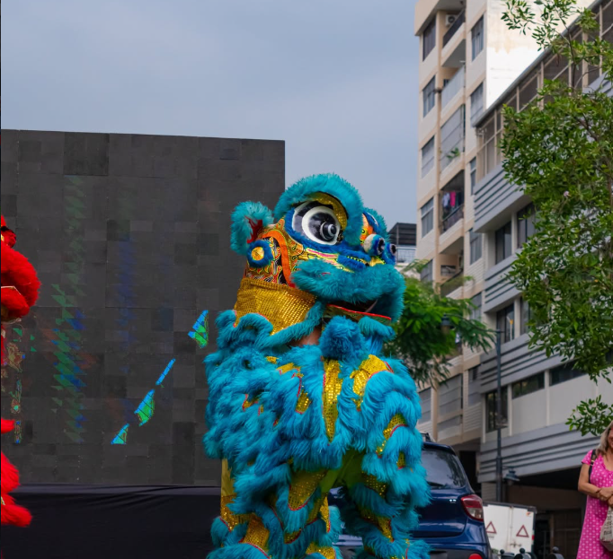
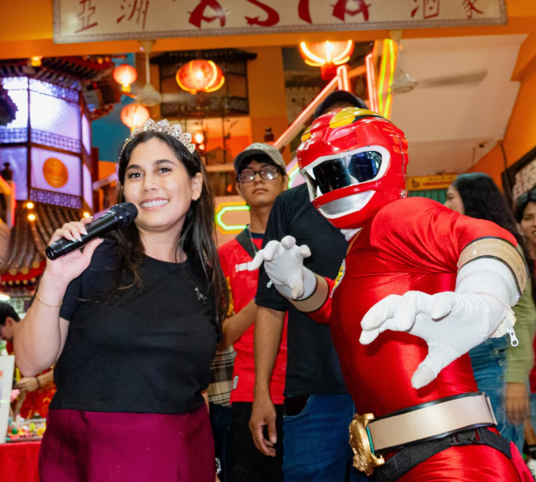

Emprendimientos
Descubre productos originales, propuestas locales y pequeños negocios que comparten su trabajo con los visitantes.
La presencia de la comunidad china en Guayaquil se remonta a más de un siglo. Con el paso del tiempo, muchas familias encontraron en el centro de la ciudad un lugar para establecer sus negocios, compartir sus tradiciones y formar parte de la vida cotidiana de los guayaquileños.
Sus restaurantes, comercios y costumbres han dejado una huella importante en la identidad de este sector, donde diferentes culturas han convivido durante generaciones.


Actualmente, el Barrio Chino forma parte de una iniciativa que busca recuperar la actividad comercial, cultural y turística del centro de Guayaquil, reconociendo la historia de quienes han contribuido al desarrollo de este sector.
El Mercado Nocturno es parte de este esfuerzo, reuniendo a emprendedores, artistas, comerciantes y visitantes en un espacio donde se puede disfrutar de la gastronomía, el entretenimiento y el encuentro entre diferentes comunidades.
El Mercado Nocturno reúne diferentes propuestas que hacen de cada visita una experiencia especial. Conoce algunas de las actividades y espacios que puedes encontrar durante el recorrido.
Descubre productos originales, propuestas locales y pequeños negocios que comparten su trabajo con los visitantes.

Disfruta de diferentes sabores y propuestas gastronómicas que forman parte de la experiencia del Mercado Nocturno.

Vive presentaciones artísticas, espectáculos y actividades culturales que llenan de alegría cada edición del mercado.

Comparte momentos con familiares y amigos, conoce nuevas personas y forma parte de un espacio que reúne a diferentes comunidades.
Cada edición del Mercado Nocturno deja experiencias, encuentros y celebraciones que forman parte de la historia de nuestro Barrio Chino.
Descubre nuestras postales y revive algunos de los momentos que han dado vida a este espacio de cultura y comunidad.
Ver postales